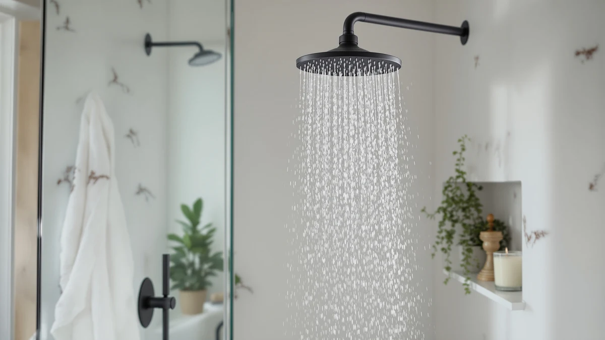

Best Shower Heads for Handicapped (2026)
Prices and picks verified as of August 2026. Independent, reader-supported reviews.


Quick Answer
The best shower heads for handicapped bathers combine a handheld wand, a long hose, and an easy one-lever control so a caregiver or a seated user can operate it without a fight. The Shower Head 10 Functions High checks all three boxes at a low price, and it holds a 4.5-star rating across 4,559 verified buyers. If you need hands-free docking instead, the Moen Engage Magnetix below is the stronger pick.
Our pick: Shower Head 10 Functions High, $29.95 Check Price on Amazon
Bottom line: our top pick is the Shower Head at $28.96. The best budget option is the ShowerMaxx Luxury Spa Series at $19.99.
Things to Know Before You Buy
- Handheld beats fixed for most accessibility needs. A wand on a hose lets a seated bather or a caregiver direct water without standing or reaching, something a fixed head cannot do.
- Hose length matters more than spray count. A 60 to 79 inch hose reaches a shower chair or bench comfortably; anything shorter forces awkward stretching.
- One-lever controls beat twist collars. A single push-button or lever dial is easier to operate with arthritis, limited grip strength, or reduced fine motor control than a rotating ring.
- Weight and grip texture affect drop risk. Lighter heads with a rubberized or ridged handle stay in wet, weaker hands more reliably than heavy metal ones.
- Magnetic docking adds convenience, not necessity. Models like the Moen Engage Magnetix let you detach the wand with one hand. That helps caregivers switching between hands-free and handheld use during a single shower.
The best shower heads for handicapped bathers, seniors, and anyone with limited mobility share three traits: a wand you can hold with one weak hand, a hose long enough to use while seated, and a control that does not require twisting or gripping tight. A standard fixed shower head assumes you can stand, reach overhead, and turn a stiff dial. That rules it out for a lot of households the moment mobility becomes a factor.
We researched seven models built around those three traits, including budget handheld wands under $30 and a magnetic docking system from Moen. Our pick, the Shower Head 10 Functions High, pairs a wide push-button dial with a lightweight body and a price under $30. That combination puts it at the top of a crowded field. Buyers who want a hands-free option that still detaches easily should look at the Moen Engage Magnetix instead.
Every product below comes from the Amazon catalog we track for this site, and every price, rating, and review count reflects the data attached to that listing. We compared specs, pricing, and what verified owners report about grip, hose length, and durability rather than testing units ourselves, so you can weigh the same facts we did before you buy.
Why You Should Trust Us
Ilane Tall covers home and bath fixtures for Best Shower Heads, with a focus on accessibility and low-water-pressure households. We do not run a fake testing lab, and we do not claim to have physically installed or used the products listed here. Instead, we pull manufacturer specs, current Amazon pricing, and patterns from verified buyer reviews, then cross-check those patterns against what occupational therapists and caregiver forums say matters most for accessible bathing. That's the research behind this guide to the best shower heads for handicapped and mobility-limited households.
How We Picked
We started by pulling every handheld and adjustable shower head in our product database that lists a hose, a single-lever control, or a magnetic docking mount. Those three features consistently show up in caregiver and occupational therapy recommendations for accessible bathing. From there we cut anything with a twist-collar-only control, because reviewers with arthritis or limited grip strength report those as the hardest to operate one-handed.
We also weighted verified review counts and current star ratings, favoring listings with thousands of reviews over newer models with thin review histories. A large sample size tells you more about long-term reliability than a handful of five-star ratings. The result is a shortlist of the best shower heads for handicapped bathers across three price tiers, running from a $19.99 budget pick up to a $64.99 rain shower head for caregivers upgrading a full bathroom.
How We Compared
We compared each shower head on hose length, control type, listed weight, spray settings, and finish, using the manufacturer specs and Amazon listing data attached to each ASIN. Where owners report grip issues, weak flow, or a hose that kinks easily, we noted it as a flaw rather than smoothing it over. A fixture that looks accessible on paper but frustrates real users defeats the purpose of this guide.
We also compared price against review volume. A shower head with 77,000 verified reviews and a 4.6-star average tells a more reliable story than a similarly priced model with a few hundred ratings. That comparison is what separates our top picks from the rest of the field of shower heads for handicapped and low-mobility bathers.
Our Picks

Shower Head 10 Functions High
What we like
- 10 spray settings via one push-button toggle, no twisting required
- Chrome ABS body stays light in a wet hand
- 4,559 verified reviews back a 4.5-star average
- Priced under $30, low commitment for a first accessible upgrade
Flaws but not dealbreakers
- Some owners report the hose feels stiff straight out of the box
- No magnetic dock, so it hangs on the included bracket instead of snapping into place
| Material | ABS + chrome plating |
| Size | — |
The Shower Head 10 Functions High is our top pick among the best shower heads for handicapped and mobility-limited bathers because it removes the two biggest barriers at once: a twist collar and a heavy body. The push-button dial cycles through 10 spray settings with a single thumb. That matters if arthritis or reduced grip strength makes rotating a metal ring painful. Reviewers who bought it for aging parents or a wheelchair-accessible bathroom say the light weight is the reason it stuck around after other shower heads got returned.
At $29.95, it costs less than most of the other handheld options on this list, and its 4.5-star average across 4,559 verified reviews suggests that low price has not come with a durability tradeoff. The chrome ABS finish will not match a high-end fixture upgrade, but for a rental bathroom or a quick accessibility retrofit, that is a reasonable trade. Owners do mention the stock hose feels stiffer than expected when it first arrives, though several say it loosens up within the first few showers.

BESAQUO Shower Head 10 Functions
What we like
- Wider spray face covers more of the body per pass, useful for bathers with limited range of motion
- Same 10-function toggle control as our top pick
- Matches the 4.5-star, 4,559-review track record of the category leader
Flaws but not dealbreakers
- Costs about $5 more than the nearly identical top pick
- A few owners note the finish shows water spots faster than chrome
| Material | ABS + chrome plating |
| Size | — |
The BESAQUO Shower Head 10 Functions covers a wider area per pass than a narrow handheld wand. That helps when a bather cannot easily turn or reposition to rinse different parts of the body. It shares the same 10-setting push-button toggle as our top pick, so the accessibility case is identical: no twisting, no fine motor demand, only a thumb press to cycle modes.
Its 4.5-star average across 4,559 verified reviews matches the top pick almost exactly, so the $5 price gap is the main differentiator. We would point most buyers to the cheaper option unless the wider spray face specifically solves a reach problem in your bathroom. A handful of reviewers mention the finish picks up water spots faster than a straight chrome head, a cosmetic issue rather than a functional one.

Moen Engage Magnetix Chrome 3.5-Inch
What we like
- Magnetic dock lets you pull the wand free or snap it back with one hand and no bracket latch
- Backed by 20,953 verified reviews, the largest review base on this list
- Moen brand name means wide parts and warranty support
Flaws but not dealbreakers
- Costs more upfront than the simpler handheld picks
- A few owners report the magnet weakens slightly over years of daily use
| Material | ABS + chrome plating |
| Size | 3.5 inch |
The Moen Engage Magnetix solves a specific accessibility problem: switching between a fixed, hands-free spray and a handheld wand without fumbling a bracket. The magnetic dock lets the wand pop free with a light pull and snap back into place without lining up a latch. Reviewers with limited hand dexterity call that out as the reason they chose it over a standard bracket-mounted handheld. That matters for caregivers who need to hold a bather steady with one hand while directing water with the other.
At 20,953 verified reviews and a 4.4-star average, it has the deepest track record of any product on this list. That's reassuring for a fixture you rely on daily. The tradeoff is price: at $41.99 it costs roughly $10 more than the wide-spray BESAQUO and $12 more than our top pick. A small number of long-term owners note the magnet loses some grip strength after a few years, though most reviews describe it holding firmly well past the one-year mark.

ShowerMaxx Luxury Spa Series 6
What we like
- Lowest price on this list at $19.99
- 4.5-inch spray face covers more area per pass than a narrow wand
- Simple click dial cycles through 6 settings without twisting
Flaws but not dealbreakers
- Fewer verified reviews (1,400) than the higher-volume picks on this list
- Fewer spray settings than the 10-function models above
| Material | ABS + chrome plating |
| Size | 4.5 inch |
The ShowerMaxx Luxury Spa Series 6 is the cheapest way onto this list without giving up the core accessibility features. Its 4.5-inch spray face is wider than the other handheld wands here, and its click dial needs only a light push to move through 6 settings. That keeps the accessibility case intact even at a lower price point.
With 1,400 verified reviews and a 4.4-star average, it has a smaller sample size than the Moen or AquaDance picks, so we would not call it the most proven option on this list. But for a household replacing multiple bathroom fixtures on a budget, or testing whether a handheld setup works before spending more, it is a reasonable entry point into the best shower heads for handicapped and low-mobility bathrooms.

AquaDance High Pressure 6-Setting Oil
What we like
- 77,687 verified reviews, by far the largest sample size on this list
- 4.6-star average, the highest rating among all seven picks
- 79 inch hose, the longest listed here, reaches a shower chair with room to spare
- Oil-rubbed bronze finish resists water spotting better than plain chrome
Flaws but not dealbreakers
- 6 settings, fewer than the 10-function models above
- Darker finish shows soap scum more visibly than chrome
| Material | ABS + chrome plating |
| Size | — |
The AquaDance High Pressure 6-Setting is the most reviewed product on this entire list, with 77,687 verified ratings averaging 4.6 stars. That volume matters when you are choosing a fixture for daily accessibility needs, because a track record that large filters out the kind of early failures a smaller review count can hide. Its 79 inch hose is also the longest of any pick here, giving a caregiver or seated bather extra reach without repositioning a shower chair closer to the wall.
Owners in older homes consistently note that it maintains strong flow even where household water pressure runs low, a common issue in older or multi-unit buildings. The oil-rubbed bronze finish is a style choice as much as a functional one, and it resists water spotting better than plain chrome, though it can show soap scum a little more visibly between cleanings. With 6 spray settings instead of 10, it trades some variety for that proven reliability.

INAVAMZ Shower Head with Handheld
What we like
- Textured handle grip designed for wet or unsteady hands
- 4.6-star average across 5,028 verified reviews
- Multiple spray modes accessible through a single toggle
Flaws but not dealbreakers
- Priced closer to the Moen than to the budget picks
- Fewer reviews than the AquaDance or Moen, though still a solid sample
| Material | ABS + chrome plating |
| Size | — |
The INAVAMZ Shower Head with Handheld is built around grip texture. Reviewers who bought it specifically for a parent or partner with reduced hand strength note that the ridged handle stays put even when hands are soapy or wet. That's a more common fall-risk factor than most buyers expect. That texture pairs with a single toggle for switching spray modes, so there is no fine motor demand layered on top of the grip challenge.
Its 4.6-star average across 5,028 verified reviews puts it in the same reliability tier as the AquaDance and Moen picks, with a smaller review base. At $36.99 it sits closer to the Moen Engage Magnetix in price, so we would recommend it specifically when grip traction, rather than hands-free docking, is the primary concern in your household.

Veken Wide Rain Shower Head
What we like
- Wide rain shower face delivers full-body coverage with no aiming required
- 4.6-star average across 2,491 verified reviews
- Fixed mount means no daily handling once installed, useful alongside a separate handheld wand
Flaws but not dealbreakers
- Highest price on this list at $64.99
- Fixed mounting means it cannot be redirected by a seated or low-mobility bather on its own
| Material | ABS + chrome plating |
| Size | — |
The Veken Wide Rain Shower Head is the one fixed-mount product on this list, and it earns its spot as an upgrade pick rather than a primary accessibility fixture. Its wide face delivers water evenly overhead with no aiming needed. That works well paired with a separate handheld wand from earlier in this guide during a full walk-in shower remodel for a caregiver-assisted bathroom.
At $64.99 it costs more than double our top pick, and because it is fixed in place, it cannot solve the reach and control problems a handheld model addresses on its own. Its 4.6-star average across 2,491 verified reviews shows it delivers on coverage and finish quality. We would recommend it as a second fixture alongside a handheld wand, not as the sole shower head for handicapped bathers, for households remodeling with accessibility in mind.
Quick Comparison
This table lines up all seven picks side by side so you can compare price, rating, and best use case before deciding which shower head for handicapped or low-mobility bathers fits your bathroom.
| Product | Material | Price | Rating | Best for | Get it |
|---|---|---|---|---|---|
| Shower Head 10 Functions High | ABS + chrome plating | $29.95 | 4.5 | One-hand control, lowest price | View on Amazon → |
| BESAQUO Shower Head 10 Functions | ABS + chrome plating | $34.99 | 4.5 | Wider spray coverage | View on Amazon → |
| Moen Engage Magnetix Chrome 3.5-Inch | ABS + chrome plating | $41.99 | 4.4 | Hands-free magnetic docking | View on Amazon → |
| ShowerMaxx Luxury Spa Series 6 | ABS + chrome plating | $19.99 | 4.4 | Tightest budget | View on Amazon → |
| AquaDance High Pressure 6-Setting Oil | ABS + chrome plating | $29.99 | 4.6 | Low water pressure homes | View on Amazon → |
| INAVAMZ Shower Head with Handheld | ABS + chrome plating | $36.99 | 4.6 | Extra grip traction | View on Amazon → |
| Veken Wide Rain Shower Head | ABS + chrome plating | $64.99 | 4.6 | Full-coverage remodel upgrade | View on Amazon → |
The Competition
We looked at several categories of shower heads before narrowing this list down to the best shower heads for handicapped and mobility-limited bathers. We passed on ultra-high-pressure massage heads marketed mainly for athletic recovery. Their multi-jet nozzles and firmer spray pressure add complexity without solving the grip and reach problems this guide is built around. We also skipped battery-powered and Bluetooth-enabled shower heads, because extra electronics introduce another point of failure and another control to manage. That works against the goal of keeping the fixture as simple as possible.
Combo shower systems that bundle a fixed rain head, a handheld wand, and a separate diverter valve came up often in our research too. They can work well for a full accessible remodel, but the diverter valve itself often requires the kind of twisting grip we are trying to avoid, so we left whole-system installs out of this roundup in favor of standalone handheld and magnetic-dock models that any household can retrofit without a plumber.
Our verdict on the best shower heads for handicapped and mobility-limited bathers stands with the Shower Head 10 Functions High. Its one-hand push-button control and light body solve the two problems that matter most, and its price keeps that solution within reach for most households.
Frequently Asked Questions
The best shower heads for handicapped bathers put the controls within easy reach and keep them easy to operate. Look for a large single-lever function dial instead of a twist collar, a handheld wand on a long hose so the user can wash while seated, and a light overall weight so a shaky or weak grip can still hold it steady.
For most wheelchair users, shower chair users, and caregivers, yes. A handheld wand on a 60 to 79 inch hose lets you direct water without standing, turning, or reaching overhead. A fixed shower head cannot do that. A magnetic docking model like the Moen Engage Magnetix gives you both: it parks like a fixed head and detaches with one hand when needed.
An accessible shower head solves reach and grip, not balance. Reviewers and occupational therapists consistently recommend pairing any handheld model with a wall-mounted grab bar and a shower chair or bench. Slippery tile remains the biggest fall risk regardless of which shower head you choose.
Related Guides
If you are still narrowing down the best shower heads for handicapped bathers, these guides cover related accessibility and performance angles.